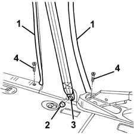
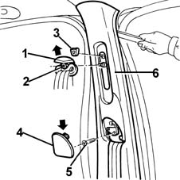
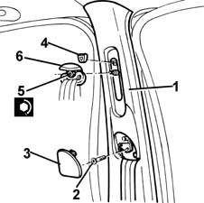
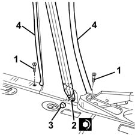
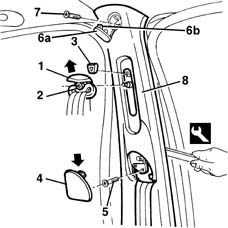
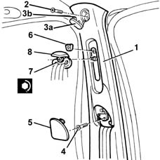

7040H34 central pillar trim - r r
- Path
- Procedures > 70 FITTINGS > 7040 BODYSHELL INTERIOR TRIMS AND FITTINGS > 7040H roof panel lining > 7040H34 central pillar trim - r r
- Kind
- repair procedure (removal / refitting; the operation number is the code)
- Applies to
- all engines; all production periods
- Interactive page
- https://sloeber94.github.io/elrnDB-fMltpl/en/#/2892200
Applies to: all engines; all production periods
 Removing
Removing
 Refitting
Refitting3380A44 handbrake/linkage protection - r+r (left side only)
1. Remove the door seals near the pillar trim.
2. Remove the cover.
3. Undo the bolt and retract the seat belt.
4. Undo the bolts fixing the running boards.

Applies to: all engines; all production periods
1. Remove the embellishment.
2. Undo the nut.
3. Remove the knob.
4. Remove the embellishment, working from the side indicated by the arrow.
5. Undo the bolt.
6. Remove the trim from the retainers using the appropriate tool.
 | Name | Country |
|---|---|---|
6 | Scraper blade | 1.878.077.000 |

Applies to: all engines; all production periods
Refitting
RemovingCheck that the cover is undamaged.
1. Fit pillar trim, engaging the retainers.
2. Tighten the bolt.
3. Fit the trim.
4. Fit the knob.
5. Tighten the nut.
 | Fastening | Component | Ø | Value (daNm) |
|---|---|---|---|---|
5 | Nut | FRONT SEAT BELT IDLER.. | - | 3.7 - 5.3 |
6. Fit the trim.

Applies to: all engines; all production periods
1. Tighten the bolts fixing the running boards.
2. Fit the seat belt and tighten the bolt.
| Fastening | Component | Ø | Value (daNm) |
|---|---|---|---|---|
2 | Lower bolt | FRONT SEAT BELTS | - | 3.7 - 5.3 |
3. Fit the cover.
4. Refit the door seals near the pillar trim.

Applies to: all engines; all production periods
Check that the seat belt slides properly.
3380A44 handbrake/linkage protection - r+r (left side only)
Applies to: all engines; all production periods; only with equipment: Head-bag
Removing
Refitting3380A44 handbrake/linkage protection - r+r (left side only)
1. Remove the door seals near the pillar trim.
2. Remove the cover.
3. Undo the bolt and retract the seat belt.
4. Undo the bolts fixing the running boards.
Applies to: all engines; all production periods; only with equipment: Head-bag
1. Remove the embellishment.
2. Undo the nut.
3. Remove the knob.
4. Remove the embellishment, working from the side indicated by the arrow.
5. Undo the bolt.
6. Remove the trim (6a) releasing its retainer (6b).
7. Undo the bolt.
8. Remove the cover from the retainer using the special tool.
| Name | Country |
|---|---|---|
8 | Scraper blade | 1.878.077.000 |

Applies to: all engines; all production periods; only with equipment: Head-bag
Refitting
RemovingCheck that the cover is undamaged.
1. Fit the pillar trim attaching the retainer.
2. Tighten the bolt.
3. Fit the trim (3a) attaching the retainer (3b).
4. Tighten the bolt.
5. Fit the trim.
6. Fit the knob.
7. Tighten the nut.
| Fastening | Component | Ø | Value (daNm) |
|---|---|---|---|---|
5 | Nut | FRONT SEAT BELT IDLER.. | - | 3.7 - 5.3 |
8. Fit the trim.

Applies to: all engines; all production periods; only with equipment: Head-bag
1. Tighten the bolts fixing the running boards.
2. Fit the seat belt and tighten the bolt.
| Fastening | Component | Ø | Value (daNm) |
|---|---|---|---|---|
- | Lower bolt | FRONT SEAT BELTS | - | 3.7 - 5.3 |
3. Fit the cover.
4. Refit the door seals near the pillar trim.
Applies to: all engines; all production periods; only with equipment: Head-bag
Check that the seat belt slides properly.
3380A44 handbrake/linkage protection - r+r (left side only)
Topics linked from this page (1)
Topics that link to this page (13)
- 5505C41 cabin wiring - r r
- 7030B06 sliding rooves (assemblies) - r r
- 7030B11 sliding roof(assembly, 1 front or rear - r r )
- 7030B20 sliding roof glass front or rear - r r
- 7030B23 MOULDING/SUPPORT seal for SLIDING ROOF GLASS PANEL, Front or Rear - R.R.
- 7030B24 sliding roof blind,front or rear - r r
- 7030B66 sun-roof movement ecu - r+r
- 7030B74 sun-roof wiring harness - r r or replace
- 7040H10 roof panel lining - r r
- 7040H16 roof panel lining - r r
- 7065A10 , (One), front SEAT BELT left or right - R.R.
- 7065A12 front seat belt (one), lh or rh, with pretensioner on wheel - r r
- 7065A18 Front set belt HEIGHT ADJUSTER , (one), left or right - R.R.